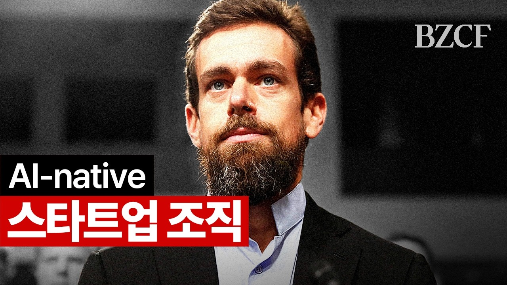

잭 도시는 블록을 위계가 아닌 '미니 AGI'로 재설계하고 있습니다.
직원 4,000명을 해고하고 모든 업무 산출물을 모델에 통합합니다.
역할은 IC·DRI·플레이어 코치 셋만 남습니다. 미들 매니저 시대는 끝났습니다.
잭 도시는 직원 40%를 자르고 회사를 '지능'으로 다시 만들고 있습니다.
당신의 조직도는 아직 2,000년 전 로마 군대를 닮아 있지 않습니까?
당신의 조직도에는 몇 단계가 있습니까? 그 단계는 무엇을 위해 존재합니까? 잭 도시의 답은 단호합니다. "정보 전달이 전부입니다." 그리고 그 정보 전달은 지금 AI가 더 잘합니다.
이 영상은 HubSpot 공동창업자 Brian Halligan의 팟캐스트입니다. 잭 도시(블록 CEO)와 Roelof Botha(Sequoia 파트너)가 'From Hierarchy to Intelligence' 에세이를 풀어 설명합니다. 단순 비용 절감이 아닌 조직 자체의 재정의입니다.
2025년 12월 코딩 모델은 레거시 코드베이스까지 다루는 단계로 올라섰습니다. 잭 도시 팀은 휴가에서 돌아와 "지금 이 도구로 회사를 다시 짓는다면 이 모습일까"를 물었고, 답은 만장일치 '아니오'였습니다. 같은 질문이 곧 한국 경영자 책상 위로 올라옵니다. AI를 코파일럿으로만 보면 경쟁사를 따라가지 못합니다.
첫째, 위계는 2,000년 된 정보 전달 프로토콜에 불과합니다. 잭 도시는 위계가 잘못이라기보다 "왜 존재하는가"를 먼저 묻습니다. 답은 정보 흐름입니다. 한 사람이 다수에게 정보를 전달하는 인간 규모 구조가 필요했습니다. 로마 군대 이래 빌려 쓰고 반복해 왔습니다. 가장 적게 의심받은 영역이 위계입니다. 지금 그 전제가 흔들립니다.
둘째, 회사 자체가 '쿼리 가능한 지능'이 됩니다. 원격 회사에서 일어나는 모든 행위는 산출물을 만듭니다. Slack 메시지, 이메일, Pull Request, Google Doc, 녹화된 회의입니다. 이것들을 사람이 위아래로 전달하지 않고 그 위에 모델을 올립니다. 6,000명 누구나 회사와 대화합니다. 분기 보드 미팅에서 이사 한 명이 자료를 읽는 대신, 모든 이사가 회사에 직접 질의합니다. 이런 그림은 지금까지 가능하지 않았습니다.
셋째, 역할은 셋만 남습니다. 첫째 IC(빌더·오퍼레이터)입니다. 에이전트로 증강되어 한 명이 과거 10명 분량을 처리합니다. 영속하는 인간 역량은 판단·취향·창의성입니다. 둘째 DRI(직접 책임자)입니다. 고객 결과의 오너이며 IC 팀을 조립합니다. 영속 역량은 오너십과 책임감입니다. 셋째 플레이어 코치입니다. 과거의 매니저가 아니라 함께 일하며 가르치는 사람입니다. 보고 라인이 아닌 '배정'으로 작동합니다.
넷째, 회의는 슬라이드가 아니라 프로토타입을 들고 옵니다. 두 달 전까지 모든 회의는 발표·문서 중심이었습니다. 지금은 누구나 시뮬레이션이든 실제 데이터든 작동하는 시제품을 가져옵니다. 실시간 수정이 가능하므로 회의 자체가 결정 회의가 아니라 탐색 회의로 바뀝니다. 80%는 도구가 만들고, 마지막 20%만 인간 판단·취향·창의가 결정합니다. 잘못된 길로 갔다 돌아오는 비용이 0에 가까워졌기 때문입니다.
다섯째, AI가 결정하지 않습니다. 고객이 결정합니다. 잭 도시는 분명히 선을 긋습니다. AI는 결정자가 아니라 맥락을 풍부하게 만드는 매개체입니다. 가장 많은 결정을 하는 주체는 고객입니다. 인터페이스가 GUI에서 대화로 바뀌면 고객의 진짜 니즈가 고해상도로 들어옵니다. 과거에는 인터뷰·서베이·Twitter 피드백으로 추론해야 했습니다. 지금은 고객 쿼리 자체가 로드맵입니다. AI는 그 신호를 정리해주는 층입니다.
여섯째, 잭 도시의 가장 큰 후회는 '과도한 위임'이었습니다. 그는 블록에 'CEO 여러 명' 구조를 두려 했습니다. Square·Cash App에 각각 CEO를 두니 회사는 점점 지주회사처럼 변했습니다. 사업 단위들이 다른 속도, 다른 가치, 다른 문화로 흩어졌습니다. 진짜 가치는 'Square + Cash App 합산'이 아니라 두 사업을 잇는 금융 네트워크였습니다. 그러나 구조가 그 가치를 막았습니다. 위임이 미덕이라는 통념은 조직이 legible 상태일 때만 성립합니다. AI가 회사를 legible하게 만들면 위임의 정의 자체가 바뀝니다.
CEO에서 말단 직원까지 몇 단계인지 종이에 그립니다. 5단 이상이면 잭 도시가 진단한 출발점과 같습니다. Claude에 "이 조직도(붙여넣기)를 보고 정보 전달 외에 다른 가치를 만드는 단계가 어디인지 평가해줘"라고 요청합니다. (15분)
발표자에게 "슬라이드 말고 작동하는 시제품을 가져오라"고 사전 공지합니다. 디자인이라도 인터랙티브해야 합니다. Claude/Cursor/Lovable로 정적 와이어프레임을 30분 안에 작동 시제품으로 바꾸는 가이드를 함께 보냅니다. 시제품이 없으면 회의를 취소합니다. (다음 회의)
실험 단위로 작은 팀을 선정해 그들의 Slack·메일·문서·회의록을 단일 모델에 연결합니다. Notion AI, Glean, ChatGPT Team의 Connectors 중 가장 빠른 옵션을 고릅니다. 1주 후 모델에게 "이 팀이 무엇을 잘하고 무엇이 막혀 있나"를 묻고, 답을 팀장의 직관과 비교합니다. (1주, IT 협조 필요)
블록의 결과는 1~2년 뒤에 나옵니다. 잭 도시 본인도 결정 후 "수개월"이라고 말합니다. 매출, 고객 이탈, 규제 대응에서의 진짜 결과는 아직 데이터로 없습니다. "Block처럼 하자"는 즉시 판단은 위험합니다. 블록은 핀테크 단일 도메인이고 원격 우선 회사라는 특수 조건도 있습니다.
보고 깊이 0단은 'CEO 직속 6,000명'이 아닙니다. 모델이 중간에서 정보를 정리한다는 전제 위에서만 가능한 그림입니다. RAG 인프라, 권한 관리, 산출물 표준화가 없는 상태에서 보고 단계만 줄이면 CEO 한 명에게 모든 부담이 몰립니다. 인프라가 먼저, 구조 변경이 다음입니다.
한국 노동법은 미국과 다릅니다. 정리해고 요건, 통보 기간, 사전 협의 절차가 모두 더 엄격합니다. "지능 기반 조직으로 재설계한다"가 정리해고의 합리적 사유로 인정될지는 별개 문제입니다. 인사·법무 사전 검토 없이 발표하면 부당 해고 분쟁 비용이 절감 효과를 넘어섭니다.
'미들 매니저는 다 없애도 된다'는 단순화는 함정입니다. 잭 도시 자신도 매니저를 없앤 게 아니라 '플레이어 코치'로 재정의했습니다. 코칭 역량과 실무 역량을 동시에 가진 사람만 살아남는다는 뜻입니다. 단순 보고 처리만 하던 매니저는 사라지지만, 사람을 키우는 매니저는 더 귀해집니다.
잭 도시는 회사를 '관리할 사람'이 아니라 '쿼리할 지능'으로 다시 정의하고 있습니다. 한국 경영자에게도 같은 질문이 다음 분기 안에 도착합니다. "지금 도구로 우리 회사를 다시 짓는다면, 같은 모습이겠습니까?"
IC (Individual Contributor) - 직접 만들고 운영하는 실무자입니다. 영업·엔지니어·디자이너·PM 등 도구를 직접 사용해 회사를 빌드하고 운영하는 모든 역할이 포함됩니다.
DRI (Directly Responsible Individual) - 한 영역의 결과를 책임지는 개인입니다. 애플이 처음 정립한 개념으로, 회의나 의사결정에서 "이 결과의 주인이 누구인가"를 한 명으로 못 박습니다.
플레이어 코치 (Player-Coach) - 자신도 실무를 하면서 동료를 가르치는 역할입니다. 잭 도시의 정의에서는 보고 라인이 아니라 '배정' 관계로 작동합니다. IC나 DRI에게 배정되어 함께 일하며 역량을 키웁니다.
미니 AGI (Mini-AGI) - 한 회사가 가진 모든 산출물(메시지·문서·코드·회의록)을 모델에 입력해 회사 자체를 쿼리 가능한 인공지능으로 다루는 개념입니다. 잭 도시·Roelof Botha의 'From Hierarchy to Intelligence' 에세이가 정립한 표현입니다.
RAG (Retrieval-Augmented Generation) - 모델이 답을 만들기 전에 회사 내부 문서를 먼저 검색해 근거로 삼는 방식입니다. 회사를 지능으로 만드는 기술적 토대입니다.
Legible 조직 - 조직 내부의 의사결정·정보 흐름·산출물이 외부에서 읽힐 수 있을 만큼 명확한 상태를 뜻합니다. 잭 도시는 AI가 회사를 legible하게 만들 때 비로소 위임의 정의가 바뀐다고 말합니다.
- Halligan, B., Dorsey, J., & Botha, R. (2026, April). AI-native 조직 (잭 도시 인터뷰) [Video]. Long Strange Trip Podcast. https://www.youtube.com/watch?v=TlpFc7x8SHo
- Dorsey, J., & Botha, R. (2026, March). From Hierarchy to Intelligence [Article]. Sequoia Capital. https://sequoiacap.com/article/from-hierarchy-to-intelligence/
- Block. (2026, March). From Hierarchy to Intelligence [Article]. Block Inside. https://block.xyz/inside/from-hierarchy-to-intelligence